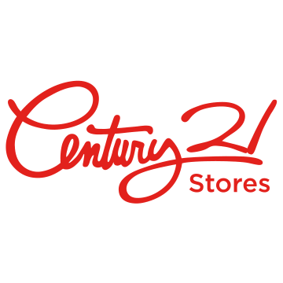
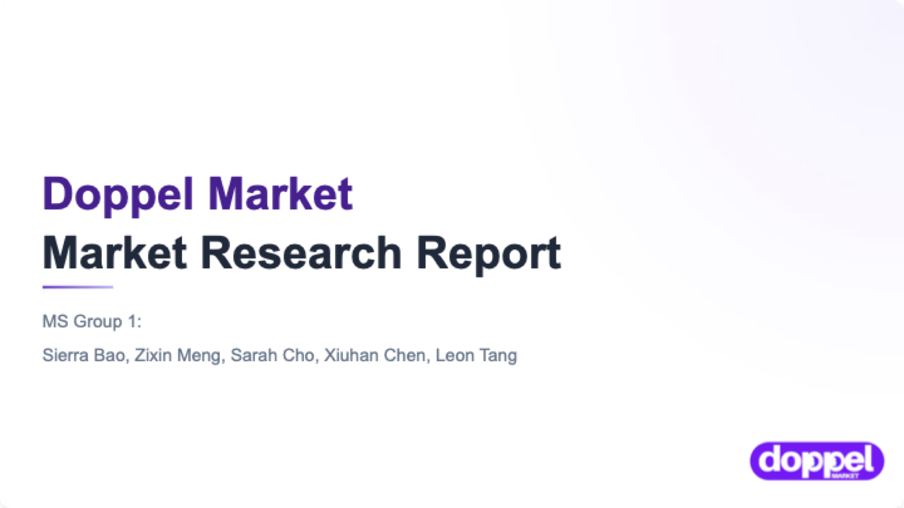

哥伦比亚大学商学院期间的研究与产品项目，挑选标准是：分析真正产出了可执行的结论。

Strategy & Consumer Insights
Gen Z 对这家百年零售商的负面印象，并非来自糟糕的体验——而是来自几乎没人真正走进过店里。

原本要验证价格能否驱动 AI 研究代理的采纳。结果驱动它的不是价格，是信任。
Marketing Analytics
用 LLM pipeline 把 18,422 家餐厅的非结构化评语，跑成一个结论：星级差距在执行，不在氛围。
Product & UX
从自己的真实痛点出发，设计并真正搭出了一个 AI 穿搭工具——不是 mockup，是能跑的原型。